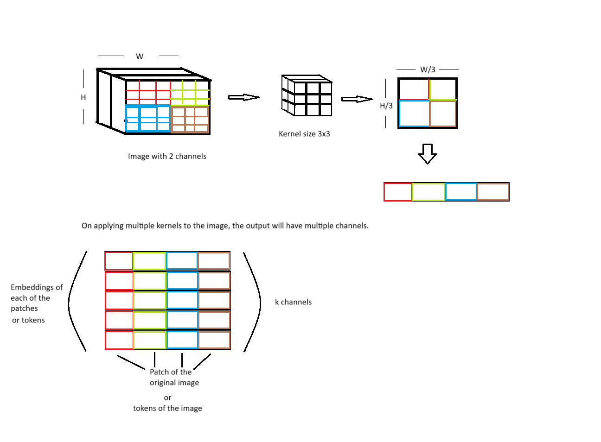

import torch
from torch import nn
First, the images is divided into non overlapping patches
The question is: - is it necessary to use convolutional neural network for getting patches - can it patches be generated simply by Image.crop
import cv2
img = cv2.imread('images/trees_reflected.jpg')
img = cv2.resize(img, (224, 224))
img # each pixel is a 3D vector (RGB)array([[[ 1, 41, 27],
[ 3, 27, 11],
[ 20, 72, 55],
...,
[152, 82, 3],
[145, 77, 0],
[152, 85, 0]],
[[ 2, 39, 31],
[ 4, 9, 5],
[ 7, 29, 27],
...,
[147, 79, 8],
[146, 80, 3],
[145, 83, 0]],
[[ 28, 44, 53],
[ 1, 15, 17],
[ 4, 25, 32],
...,
[148, 90, 16],
[141, 85, 3],
[141, 84, 8]],
...,
[[177, 102, 0],
[177, 102, 0],
[178, 103, 1],
...,
[170, 93, 1],
[170, 93, 1],
[171, 93, 0]],
[[178, 102, 1],
[178, 104, 2],
[178, 103, 1],
...,
[170, 93, 1],
[169, 92, 0],
[169, 92, 0]],
[[177, 102, 0],
[176, 101, 0],
[178, 102, 2],
...,
[170, 93, 1],
[169, 92, 0],
[171, 93, 0]]], dtype=uint8)x = img.transpose(2,1,0)
x = torch.tensor(x, dtype = torch.float32)
xtensor([[[ 1., 2., 28., ..., 177., 178., 177.],
[ 3., 4., 1., ..., 177., 178., 176.],
[ 20., 7., 4., ..., 178., 178., 178.],
...,
[152., 147., 148., ..., 170., 170., 170.],
[145., 146., 141., ..., 170., 169., 169.],
[152., 145., 141., ..., 171., 169., 171.]],
[[ 41., 39., 44., ..., 102., 102., 102.],
[ 27., 9., 15., ..., 102., 104., 101.],
[ 72., 29., 25., ..., 103., 103., 102.],
...,
[ 82., 79., 90., ..., 93., 93., 93.],
[ 77., 80., 85., ..., 93., 92., 92.],
[ 85., 83., 84., ..., 93., 92., 93.]],
[[ 27., 31., 53., ..., 0., 1., 0.],
[ 11., 5., 17., ..., 0., 2., 0.],
[ 55., 27., 32., ..., 1., 1., 2.],
...,
[ 3., 8., 16., ..., 1., 1., 1.],
[ 0., 3., 3., ..., 1., 0., 0.],
[ 0., 0., 8., ..., 0., 0., 0.]]])class PatchEmbeddings(nn.Module):
def __init__(self, image, out_channels, kernel_size):
super().__init__()
self.image = image
self.out_channels = out_channels
self.kernel_size = kernel_size
num_tokens = (image.shape[1] // kernel_size) * (image.shape[2] // kernel_size)
self.num_tokens = num_tokens
self.Conv = nn.Conv2d(in_channels= image.shape[0], out_channels= self.out_channels, kernel_size = self.kernel_size, stride = 3)
def forward(self):
x = self.Conv(self.image) # image size (224x224) , convolved image (10, 74, 74) 74x74 patches with embedding dimension of 10
x = x.flatten(1) # (10, 5476)
x = x.transpose(1, 0) #(5476, 10), each token or patch is of dimension 10
return xtoken_embedding = PatchEmbeddings(x, out_channels = 10, kernel_size = 3)
out = token_embedding()
out.shapetorch.Size([5476, 10])Here positional embedding and class token is added
class token is appended in the beginning of all the image toekns
class token gives the overall representation of the image. Without class token, the ViT will attend to patches (or image tokens) but can not giv the overall representation of the image ( to which class does the image belong).
If there are 100 image tokens of dimension 256 then a class token of dimension 256 is added to the sequence of image tokens, the number of tokens become 101 of dimension 256.
class Embedding(nn.Module):
def __init__(self, image, out_channels, kernel_size):
super().__init__()
self.patch_embedding = PatchEmbeddings(image, out_channels, kernel_size)
self.linear = nn.Linear(1, out_channels)
def forward(self):
x = self.patch_embedding.forward()
print(x.shape)
num_tokens = self.patch_embedding.num_tokens
position = torch.tensor(torch.arange(1, num_tokens + 1).unsqueeze(0).T, dtype = torch.float32)
print(position.shape)
pos_embed = self.linear(position)
print(pos_embed.shape)
x = x + pos_embed
cls_token = nn.Parameter(torch.randn((1, self.patch_embedding.out_channels)))
x = torch.cat([cls_token, x], dim = 0)
return x
embed = Embedding(x, out_channels = 10, kernel_size = 3)
embed_out = embed()
embed_out.shapetorch.Size([5476, 10])
torch.Size([5476, 1])
torch.Size([5476, 10])C:\Users\Hp\AppData\Local\Temp\ipykernel_18220\3315714593.py:11: UserWarning: To copy construct from a tensor, it is recommended to use sourceTensor.clone().detach() or sourceTensor.clone().detach().requires_grad_(True), rather than torch.tensor(sourceTensor).
position = torch.tensor(torch.arange(1, num_tokens + 1).unsqueeze(0).T, dtype = torch.float32)torch.Size([5477, 10])class MultiheadSelfAttention(nn.Module):
def __init__(self, input_dim, heads):
super().__init__()
self.input_dim = input_dim
self.heads = heads
self.head_dim = input_dim // heads
self.embed_dim = heads * self.head_dim
self.wq = nn.Linear(self.head_dim, self.head_dim)
self.wk = nn.Linear(self.head_dim, self.head_dim)
self.wv = nn.Linear(self.head_dim, self.head_dim)
def forward(self, query, key, value):
num_tokens = query.shape[0]
query = query.reshape(num_tokens, self.heads, self.head_dim)
key = key.reshape(num_tokens, self.heads, self.head_dim)
value = value.reshape(num_tokens, self.heads, self.head_dim)
query = self.wq(query)
key = self.wk(key)
value = self.wv(value)
attention_score = torch.einsum('qhd, khd -> qhk', query, key)
attention_value = nn.functional.softmax(attention_score / (self.head_dim ** 0.5), dim = -1)
value = torch.einsum('nhn, nhd -> nhd', attention_value, value)
value = value.reshape((num_tokens, self.embed_dim))
return value
embed = Embedding(x, out_channels = 512, kernel_size = 3)
embed_out = embed()
sat = MultiheadSelfAttention(512, 8)
value = sat(embed_out, embed_out, embed_out)
value.shape torch.Size([5476, 512])
torch.Size([5476, 1])
torch.Size([5476, 512])C:\Users\Hp\AppData\Local\Temp\ipykernel_18220\3315714593.py:11: UserWarning: To copy construct from a tensor, it is recommended to use sourceTensor.clone().detach() or sourceTensor.clone().detach().requires_grad_(True), rather than torch.tensor(sourceTensor).
position = torch.tensor(torch.arange(1, num_tokens + 1).unsqueeze(0).T, dtype = torch.float32)torch.Size([5477, 512])class EncoderBlock(nn.Module):
def __init__(self, input_dim, embed_dim, heads): # embed_dim is out_channels
super().__init__()
self.norm1 = nn.LayerNorm(embed_dim)
self.attn_layer = MultiheadSelfAttention(input_dim, heads)
self.norm2 = nn.LayerNorm(embed_dim)
self.mlp = nn.Sequential(
nn.Linear(embed_dim, embed_dim),
nn.Dropout(p = 0.2),
nn.Linear(embed_dim, embed_dim),
)
def forward(self, embedding):
x = self.norm1(embedding)
attn_x = self.attn_layer(x,x,x)
x = attn_x + x
x = self.norm2(x)
mlp_x = self.mlp(x)
x = mlp_x + x
return x
embed = Embedding(x, out_channels = 512, kernel_size = 3)
embed_out = embed()
encoder = EncoderBlock(input_dim = 512, embed_dim = 512, heads = 8)
value = encoder(embed_out)
value.shape torch.Size([5476, 512])
torch.Size([5476, 1])
torch.Size([5476, 512])C:\Users\Hp\AppData\Local\Temp\ipykernel_18220\3315714593.py:11: UserWarning: To copy construct from a tensor, it is recommended to use sourceTensor.clone().detach() or sourceTensor.clone().detach().requires_grad_(True), rather than torch.tensor(sourceTensor).
position = torch.tensor(torch.arange(1, num_tokens + 1).unsqueeze(0).T, dtype = torch.float32)torch.Size([5477, 512])class Vit(nn.Module):
def __init__(self, input_dim, embed_dim, heads, num_encoders):
super().__init__()
self.num_encoders = num_encoders
self.encoder_blocks = nn.ModuleList([EncoderBlock(input_dim, embed_dim, heads) for _ in range(self.num_encoders)])
def forward(self, embedding):
x = embedding
for encoder_block in self.encoder_blocks:
x = encoder_block(x)
return x
embed = Embedding(x, out_channels = 512, kernel_size = 3)
embed_out = embed()
vit_model = Vit(input_dim = 512, embed_dim = 512, heads = 8, num_encoders = 4)
value = vit_model(embed_out)
value.shapetorch.Size([5476, 512])
torch.Size([5476, 1])
torch.Size([5476, 512])C:\Users\Hp\AppData\Local\Temp\ipykernel_18220\3315714593.py:11: UserWarning: To copy construct from a tensor, it is recommended to use sourceTensor.clone().detach() or sourceTensor.clone().detach().requires_grad_(True), rather than torch.tensor(sourceTensor).
position = torch.tensor(torch.arange(1, num_tokens + 1).unsqueeze(0).T, dtype = torch.float32)torch.Size([5477, 512])